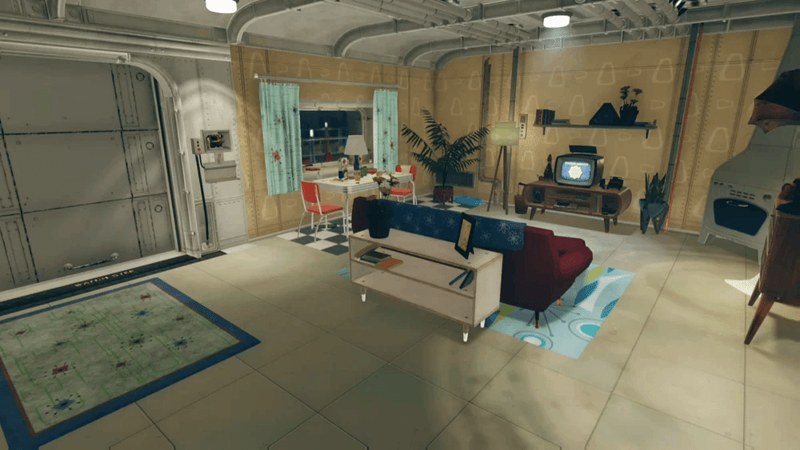
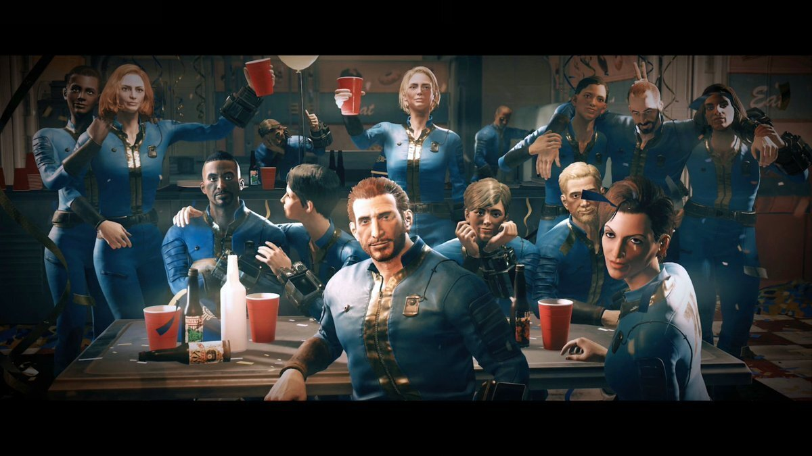
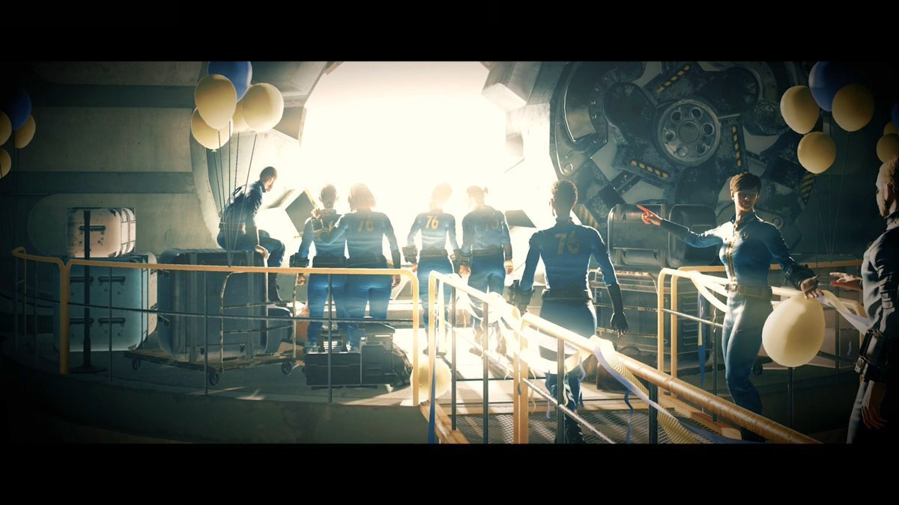

Vault76
概要と目的
Vault 76は、Vault-Tecが設計・建設した17の「コントロールVault」の一つで、核戦争後の社会実験を目的とした他のVaultとは異なり、純粋に生存と再建を目的とした施設です。
アメリカ建国300周年を記念して「Official Vault of the Tricentennial」と称され、2076年に公開されました。
主な目的は、核戦争から選ばれた優秀な人材を守り、戦争後20年目に開封してアメリカの再建を推進することです。
実験の有無
他のVaultが社会実験（例: 放射能暴露、遺伝子操作）の場だったのに対し、Vault 76はコントロールグループとして実験なし。
居住者の行動が基準データとして使用され、他のVaultの実験結果を比較するためのものです。
これにより、Vault-Tecは人類の長期生存可能性を評価していました。
歴史とタイムライン
Vault 76の歴史は、Falloutシリーズの過去作（Fallout 3など）で言及されており、『Fallout 76』で詳細が明らかになります。建設
2065年2月に着工、2069年10月に完成。
場所はウェストバージニアのアパラチア地域（フラッドウッズの北、森林地帯エリア）。
ボルトテック大学（モーガンタウン）と連携し、優秀な卒業生を優先的に収容。
公開
2076年7月4日、アメリカ独立記念日にテレビ中継でデビュー。
Vault-Tecの宣伝として大々的に扱われました。封鎖
2077年10月23日、大戦争発生時に封鎖。
予定では2097年（戦争後20年目）に開封予定でしたが、実際のゲーム開始時は2102年10月23日（再生の日）。
これはVault-Tecの調整によるものとロアで示唆されています。開封後
開封後24時間以内に居住不能になり、居住者は強制的に退出。
ロボットが施設を保存状態に維持。
ロアによると、Vault 76はアメリカの「finest, brightest, and most talented individuals」（最も優秀で明るく才能ある人々）を集め、核戦争後の再植民化を担うはずでした。
実際、居住者は戦争後すぐにアパラチアの脅威に直面し、多くの者が死亡または行方不明になりましたが、これはVault-Tecの計画の一部として解釈されることがあります。
特徴と施設
Vault 76は、Vault-Tecの標準技術を備えた豪華な施設で、生存率を最大化する設計です。
収容人数 最大500人。
各居住者にフル装備のアパート（寝室、リビング、バスルーム、カラーテレビ付き）が割り当てられました。

電源とシステム LightLife地熱発電、超原子炉、核発電バックアップ。
Brainpower 4コンピュータシステム、SimuSun照明、自動清掃システムを搭載。
食料は合成機で供給され、過密時には配給制に切り替え。
監督官は若く経験の浅い人物で、住民の競争心を管理するため賞やイベント（例: Vault 76 World Cup）を導入。
開封前に3つの核サイロ確保を任務としましたが、単独では不可能だった可能性が高い。
プライベートセキュリティが厳重で、秘密保持のための脅迫や報酬が用いられました。
内部は清潔でモダンなデザインで、Vault-Tecのモットー「Prepare for the Future」が随所に。
ゲームでは内部を自由に探索できませんが、ホロテープや端末から詳細がわかります。
Vault 76の住民は、アメリカの「finest, brightest, and most talented individuals」で構成され、再建に適した人材が選ばれました。
Vault-Tec大学卒業生、軍人、科学者、元政府関係者などが優先。
プレイヤーキャラクターもその一人。
封鎖後、25年間の閉鎖生活で教育プログラムや訓練を実施。
開封時にはパーティーで祝い、サバイバルパッケージ（Pip-Boy、C.A.M.P.など）を受け取って退出。


開封後、多くの住民がアパラチアの脅威に敗れましたが、一部は生存し、ゲームのクエストに登場。
主な生存NPCは監督官で、再建を導きます。
『Fallout 76』でのゲーム内役割
『Fallout 76』は2102年を舞台とし、プレイヤーはVault 76の居住者としてゲームを開始します。
再生の日に開封し、外の世界へ。
内部は再入場不可ですが、外観はランドマークとして存在。
クエスト関与 メインクエスト「Reclamation Day」から始まり、監督官のホロテープを探すストーリーが展開。
アパラチアの再建、スコーチ病の解決、核兵器の扱いがテーマ。
アップデート Wastelanders, Steel Dawnで追加ロアがあり、Brotherhood of Steelとの関わりが深まります。
Vault 76はアパラチアの他のVault（51, 63など）と対比され、コントロールVaultの成功例として描かれます。
再生の日、それは希望に満ちあふれていた。
βを徹夜でし、やっと迎えた再生の日。
Vaultが開放されるいつもの演出が記憶に残っています。
その時は3人で始めたのに気づいたら一人という・・・アパラチアは過酷ですね。
そろそろVault76のNPCを実装してもいいんじゃないでしょうか。
それとは別にロケーション紹介の旅はここから再生の日を迎えます。
とっ散らかってるのを順序にそってロケーション紹介しないと撮ったSSが何処だかもう分からない状態になってて終わってるんですよねw
後SSってゲーム内の日が昇って落ちるまでの間かつ、その地方に雨が降ったり、霧が出てない事が自分の条件なのでナカナカ巡り会えない時があります。
私SS撮り始めて初めて地域で天候が同じなの知りました。 てっきり円形描いてそこらへんに雨ふってるのかと・・・。
コミュニティ維持のため、寄付を受け付けております。
> COMMENTS